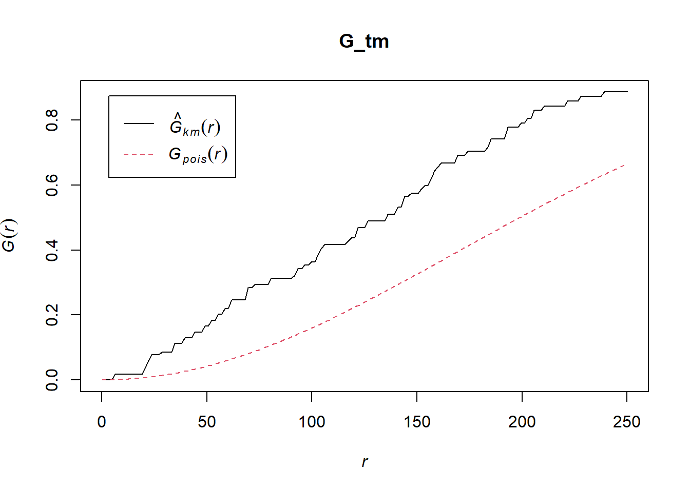
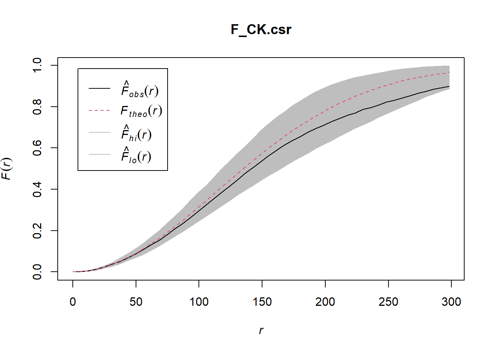
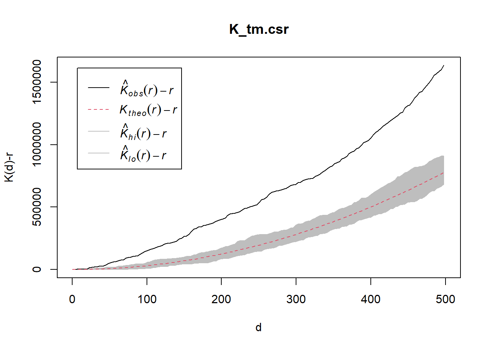
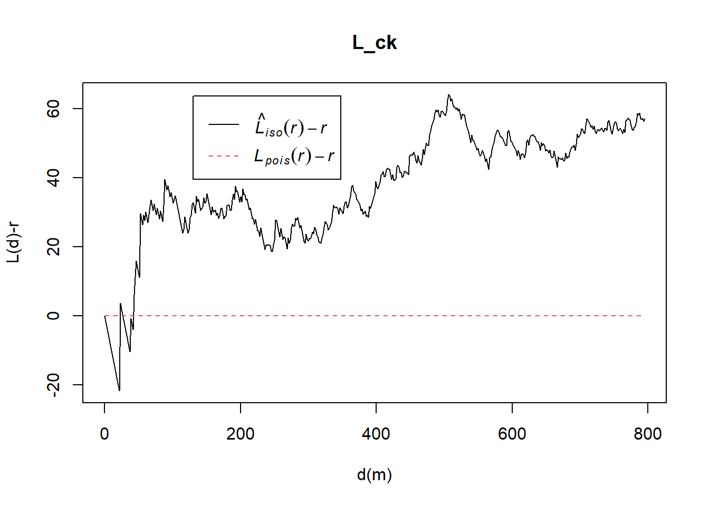
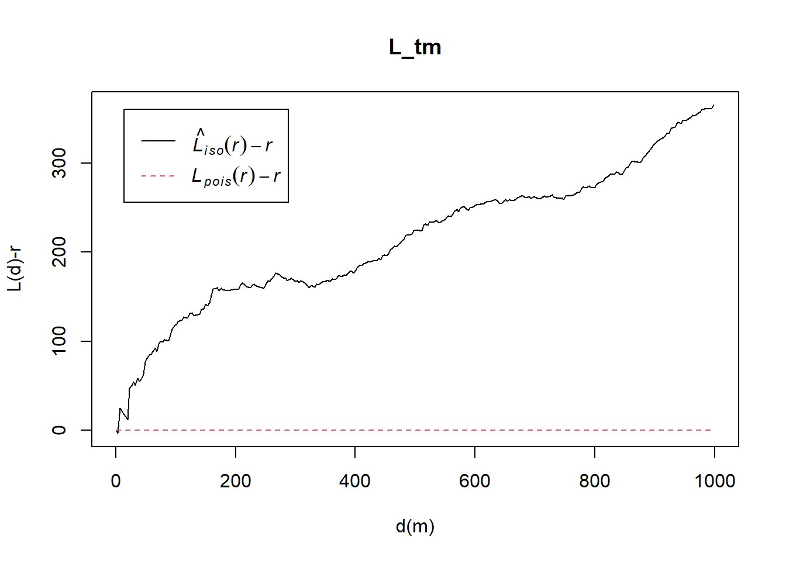

pacman::p_load(maptools, sf, raster, spatstat, tmap, tidyverse)In class Exercise 03
getting started woo
import data and load packages
childcare_sf <- read_rds("data/rds/childcare_sf.rds")
mpsz_sf <- read_rds("data/rds/mpsz_sf.rds")
sg_sf <- read_rds("data/rds/sg_sf.rds") st_crs(mpsz_sf)Coordinate Reference System:
User input: SVY21
wkt:
PROJCRS["SVY21",
BASEGEOGCRS["SVY21[WGS84]",
DATUM["World Geodetic System 1984",
ELLIPSOID["WGS 84",6378137,298.257223563,
LENGTHUNIT["metre",1]],
ID["EPSG",6326]],
PRIMEM["Greenwich",0,
ANGLEUNIT["Degree",0.0174532925199433]]],
CONVERSION["unnamed",
METHOD["Transverse Mercator",
ID["EPSG",9807]],
PARAMETER["Latitude of natural origin",1.36666666666667,
ANGLEUNIT["Degree",0.0174532925199433],
ID["EPSG",8801]],
PARAMETER["Longitude of natural origin",103.833333333333,
ANGLEUNIT["Degree",0.0174532925199433],
ID["EPSG",8802]],
PARAMETER["Scale factor at natural origin",1,
SCALEUNIT["unity",1],
ID["EPSG",8805]],
PARAMETER["False easting",28001.642,
LENGTHUNIT["metre",1],
ID["EPSG",8806]],
PARAMETER["False northing",38744.572,
LENGTHUNIT["metre",1],
ID["EPSG",8807]]],
CS[Cartesian,2],
AXIS["(E)",east,
ORDER[1],
LENGTHUNIT["metre",1,
ID["EPSG",9001]]],
AXIS["(N)",north,
ORDER[2],
LENGTHUNIT["metre",1,
ID["EPSG",9001]]]]changing mpsz_sf to 3414
mpsz_sf <- st_transform(mpsz_sf, 3414)checking
st_crs(mpsz_sf)Coordinate Reference System:
User input: EPSG:3414
wkt:
PROJCRS["SVY21 / Singapore TM",
BASEGEOGCRS["SVY21",
DATUM["SVY21",
ELLIPSOID["WGS 84",6378137,298.257223563,
LENGTHUNIT["metre",1]]],
PRIMEM["Greenwich",0,
ANGLEUNIT["degree",0.0174532925199433]],
ID["EPSG",4757]],
CONVERSION["Singapore Transverse Mercator",
METHOD["Transverse Mercator",
ID["EPSG",9807]],
PARAMETER["Latitude of natural origin",1.36666666666667,
ANGLEUNIT["degree",0.0174532925199433],
ID["EPSG",8801]],
PARAMETER["Longitude of natural origin",103.833333333333,
ANGLEUNIT["degree",0.0174532925199433],
ID["EPSG",8802]],
PARAMETER["Scale factor at natural origin",1,
SCALEUNIT["unity",1],
ID["EPSG",8805]],
PARAMETER["False easting",28001.642,
LENGTHUNIT["metre",1],
ID["EPSG",8806]],
PARAMETER["False northing",38744.572,
LENGTHUNIT["metre",1],
ID["EPSG",8807]]],
CS[Cartesian,2],
AXIS["northing (N)",north,
ORDER[1],
LENGTHUNIT["metre",1]],
AXIS["easting (E)",east,
ORDER[2],
LENGTHUNIT["metre",1]],
USAGE[
SCOPE["Cadastre, engineering survey, topographic mapping."],
AREA["Singapore - onshore and offshore."],
BBOX[1.13,103.59,1.47,104.07]],
ID["EPSG",3414]]checking sg_sf
st_crs(sg_sf)Coordinate Reference System:
User input: EPSG:3414
wkt:
PROJCRS["SVY21 / Singapore TM",
BASEGEOGCRS["SVY21",
DATUM["SVY21",
ELLIPSOID["WGS 84",6378137,298.257223563,
LENGTHUNIT["metre",1]]],
PRIMEM["Greenwich",0,
ANGLEUNIT["degree",0.0174532925199433]],
ID["EPSG",4757]],
CONVERSION["Singapore Transverse Mercator",
METHOD["Transverse Mercator",
ID["EPSG",9807]],
PARAMETER["Latitude of natural origin",1.36666666666667,
ANGLEUNIT["degree",0.0174532925199433],
ID["EPSG",8801]],
PARAMETER["Longitude of natural origin",103.833333333333,
ANGLEUNIT["degree",0.0174532925199433],
ID["EPSG",8802]],
PARAMETER["Scale factor at natural origin",1,
SCALEUNIT["unity",1],
ID["EPSG",8805]],
PARAMETER["False easting",28001.642,
LENGTHUNIT["metre",1],
ID["EPSG",8806]],
PARAMETER["False northing",38744.572,
LENGTHUNIT["metre",1],
ID["EPSG",8807]]],
CS[Cartesian,2],
AXIS["northing (N)",north,
ORDER[1],
LENGTHUNIT["metre",1]],
AXIS["easting (E)",east,
ORDER[2],
LENGTHUNIT["metre",1]],
USAGE[
SCOPE["Cadastre, engineering survey, topographic mapping."],
AREA["Singapore - onshore and offshore."],
BBOX[1.13,103.59,1.47,104.07]],
ID["EPSG",3414]]mapping geospatial dataset
tm_shape(mpsz_sf)+
tm_polygons()+
tm_shape(childcare_sf)+
tm_dots()
geospatial data wrangling
Converting sf data frames to sp’s Spatial* class
childcare <- as_Spatial(childcare_sf)
mpsz <- as_Spatial(mpsz_sf)
sg <- as_Spatial(sg_sf)display the information of the above 3 spatial classes
childcareclass : SpatialPointsDataFrame
features : 1925
extent : 11810.03, 45404.24, 25596.33, 49300.88 (xmin, xmax, ymin, ymax)
crs : +proj=tmerc +lat_0=1.36666666666667 +lon_0=103.833333333333 +k=1 +x_0=28001.642 +y_0=38744.572 +ellps=WGS84 +towgs84=0,0,0,0,0,0,0 +units=m +no_defs
variables : 2
names : Name, Description
min values : kml_1, <center><table><tr><th colspan='2' align='center'><em>Attributes</em></th></tr><tr bgcolor="#E3E3F3"> <th>ADDRESSBLOCKHOUSENUMBER</th> <td></td> </tr><tr bgcolor=""> <th>ADDRESSBUILDINGNAME</th> <td></td> </tr><tr bgcolor="#E3E3F3"> <th>ADDRESSPOSTALCODE</th> <td>100044</td> </tr><tr bgcolor=""> <th>ADDRESSSTREETNAME</th> <td>44, TELOK BLANGAH DRIVE, #01 - 19/51, SINGAPORE 100044</td> </tr><tr bgcolor="#E3E3F3"> <th>ADDRESSTYPE</th> <td></td> </tr><tr bgcolor=""> <th>DESCRIPTION</th> <td>Child Care Services</td> </tr><tr bgcolor="#E3E3F3"> <th>HYPERLINK</th> <td></td> </tr><tr bgcolor=""> <th>LANDXADDRESSPOINT</th> <td></td> </tr><tr bgcolor="#E3E3F3"> <th>LANDYADDRESSPOINT</th> <td></td> </tr><tr bgcolor=""> <th>NAME</th> <td>PCF SPARKLETOTS PRESCHOOL @ TELOK BLANGAH BLK 44 (CC)</td> </tr><tr bgcolor="#E3E3F3"> <th>PHOTOURL</th> <td></td> </tr><tr bgcolor=""> <th>ADDRESSFLOORNUMBER</th> <td></td> </tr><tr bgcolor="#E3E3F3"> <th>INC_CRC</th> <td>349C54F201805938</td> </tr><tr bgcolor=""> <th>FMEL_UPD_D</th> <td>20211201093837</td> </tr><tr bgcolor="#E3E3F3"> <th>ADDRESSUNITNUMBER</th> <td></td> </tr></table></center>
max values : kml_999, <center><table><tr><th colspan='2' align='center'><em>Attributes</em></th></tr><tr bgcolor="#E3E3F3"> <th>ADDRESSBLOCKHOUSENUMBER</th> <td></td> </tr><tr bgcolor=""> <th>ADDRESSBUILDINGNAME</th> <td></td> </tr><tr bgcolor="#E3E3F3"> <th>ADDRESSPOSTALCODE</th> <td>99982</td> </tr><tr bgcolor=""> <th>ADDRESSSTREETNAME</th> <td>35, ALLANBROOKE ROAD, SINGAPORE 099982</td> </tr><tr bgcolor="#E3E3F3"> <th>ADDRESSTYPE</th> <td></td> </tr><tr bgcolor=""> <th>DESCRIPTION</th> <td>Child Care Services</td> </tr><tr bgcolor="#E3E3F3"> <th>HYPERLINK</th> <td></td> </tr><tr bgcolor=""> <th>LANDXADDRESSPOINT</th> <td></td> </tr><tr bgcolor="#E3E3F3"> <th>LANDYADDRESSPOINT</th> <td></td> </tr><tr bgcolor=""> <th>NAME</th> <td>ISLANDER PRE-SCHOOL PTE LTD</td> </tr><tr bgcolor="#E3E3F3"> <th>PHOTOURL</th> <td></td> </tr><tr bgcolor=""> <th>ADDRESSFLOORNUMBER</th> <td></td> </tr><tr bgcolor="#E3E3F3"> <th>INC_CRC</th> <td>4F63ACF93EFABE7F</td> </tr><tr bgcolor=""> <th>FMEL_UPD_D</th> <td>20211201093837</td> </tr><tr bgcolor="#E3E3F3"> <th>ADDRESSUNITNUMBER</th> <td></td> </tr></table></center> mpszclass : SpatialPolygonsDataFrame
features : 323
extent : 2667.538, 56396.44, 15748.72, 50256.33 (xmin, xmax, ymin, ymax)
crs : +proj=tmerc +lat_0=1.36666666666667 +lon_0=103.833333333333 +k=1 +x_0=28001.642 +y_0=38744.572 +ellps=WGS84 +towgs84=0,0,0,0,0,0,0 +units=m +no_defs
variables : 15
names : OBJECTID, SUBZONE_NO, SUBZONE_N, SUBZONE_C, CA_IND, PLN_AREA_N, PLN_AREA_C, REGION_N, REGION_C, INC_CRC, FMEL_UPD_D, X_ADDR, Y_ADDR, SHAPE_Leng, SHAPE_Area
min values : 1, 1, ADMIRALTY, AMSZ01, N, ANG MO KIO, AM, CENTRAL REGION, CR, 00F5E30B5C9B7AD8, 16409, 5092.8949, 19579.069, 871.554887798, 39437.9352703
max values : 323, 17, YUNNAN, YSSZ09, Y, YISHUN, YS, WEST REGION, WR, FFCCF172717C2EAF, 16409, 50424.7923, 49552.7904, 68083.9364708, 69748298.792 sgclass : SpatialPolygons
features : 1
extent : 2667.538, 56396.44, 15748.72, 50256.33 (xmin, xmax, ymin, ymax)
crs : +proj=tmerc +lat_0=1.36666666666667 +lon_0=103.833333333333 +k=1 +x_0=28001.642 +y_0=38744.572 +ellps=WGS84 +towgs84=0,0,0,0,0,0,0 +units=m +no_defs Converting the Spatial* class into generic sp format
childcare_sp <- as(childcare, "SpatialPoints")
sg_sp <- as(sg, "SpatialPolygons")childcare_spclass : SpatialPoints
features : 1925
extent : 11810.03, 45404.24, 25596.33, 49300.88 (xmin, xmax, ymin, ymax)
crs : +proj=tmerc +lat_0=1.36666666666667 +lon_0=103.833333333333 +k=1 +x_0=28001.642 +y_0=38744.572 +ellps=WGS84 +towgs84=0,0,0,0,0,0,0 +units=m +no_defs sg_spclass : SpatialPolygons
features : 1
extent : 2667.538, 56396.44, 15748.72, 50256.33 (xmin, xmax, ymin, ymax)
crs : +proj=tmerc +lat_0=1.36666666666667 +lon_0=103.833333333333 +k=1 +x_0=28001.642 +y_0=38744.572 +ellps=WGS84 +towgs84=0,0,0,0,0,0,0 +units=m +no_defs Converting the generic sp format into spatstat’s ppp format
childcare_ppp <- as(childcare_sp, "ppp")
childcare_pppPlanar point pattern: 1925 points
window: rectangle = [11810.03, 45404.24] x [25596.33, 49300.88] unitsplot(childcare_ppp)
remove duplicate
since we already know that in part 1, there are duplicates, we’ll skippdy skip
childcare_ppp_jit <- rjitter(childcare_ppp,
retry=TRUE,
nsim=1,
drop=TRUE)any(duplicated(childcare_ppp_jit))[1] FALSEcreating owin
sg_owin <- as(sg_sp, "owin")plot(sg_owin)summary(sg_owin)Window: polygonal boundary
80 separate polygons (35 holes)
vertices area relative.area
polygon 1 4 9.47108e+01 1.21e-07
polygon 2 37 1.29481e+04 1.66e-05
polygon 3 30 4.28933e+03 5.49e-06
polygon 4 145 9.61782e+05 1.23e-03
polygon 5 227 1.10308e+06 1.41e-03
polygon 6 19 3.09221e+04 3.95e-05
polygon 7 10 6.60195e+03 8.44e-06
polygon 8 234 2.08755e+06 2.67e-03
polygon 9 22 6.74651e+03 8.63e-06
polygon 10 71 5.63061e+03 7.20e-06
polygon 11 10 1.99717e+02 2.55e-07
polygon 12 14663 6.97996e+08 8.93e-01
polygon 13 (hole) 3 -2.05920e-03 -2.63e-12
polygon 14 (hole) 3 -2.89050e-05 -3.70e-14
polygon 15 (hole) 3 -2.83151e-01 -3.62e-10
polygon 16 (hole) 3 -3.99521e-02 -5.11e-11
polygon 17 (hole) 3 -4.95057e-02 -6.33e-11
polygon 18 (hole) 3 -3.65501e-03 -4.67e-12
polygon 19 (hole) 4 -2.05611e-02 -2.63e-11
polygon 20 (hole) 3 -1.68316e-04 -2.15e-13
polygon 21 (hole) 26 -1.25665e+03 -1.61e-06
polygon 22 (hole) 3 -2.18000e-06 -2.79e-15
polygon 23 (hole) 3 -6.62377e-01 -8.47e-10
polygon 24 (hole) 3 -2.09065e-03 -2.67e-12
polygon 25 (hole) 36 -7.79904e+03 -9.97e-06
polygon 26 (hole) 3 -8.83647e-03 -1.13e-11
polygon 27 (hole) 3 -2.21090e+00 -2.83e-09
polygon 28 (hole) 40 -6.00381e+03 -7.68e-06
polygon 29 (hole) 7 -1.40545e-01 -1.80e-10
polygon 30 (hole) 20 -4.39069e+00 -5.62e-09
polygon 31 (hole) 28 -1.99862e+01 -2.56e-08
polygon 32 (hole) 48 -1.38338e+02 -1.77e-07
polygon 33 (hole) 351 -1.21433e+03 -1.55e-06
polygon 34 (hole) 12 -8.36709e+01 -1.07e-07
polygon 35 (hole) 317 -5.11280e+04 -6.54e-05
polygon 36 (hole) 36 -4.01660e+04 -5.14e-05
polygon 37 30 2.80002e+04 3.58e-05
polygon 38 27 1.50315e+04 1.92e-05
polygon 39 15 4.03300e+04 5.16e-05
polygon 40 1045 4.44510e+06 5.68e-03
polygon 41 (hole) 13 -3.91907e+02 -5.01e-07
polygon 42 47 3.82087e+04 4.89e-05
polygon 43 65 8.42861e+04 1.08e-04
polygon 44 478 2.06120e+06 2.64e-03
polygon 45 266 1.50631e+06 1.93e-03
polygon 46 234 4.72886e+05 6.05e-04
polygon 47 14 5.86546e+03 7.50e-06
polygon 48 83 5.28920e+03 6.76e-06
polygon 49 75 1.73526e+04 2.22e-05
polygon 50 148 3.10395e+03 3.97e-06
polygon 51 142 3.22293e+03 4.12e-06
polygon 52 45 2.51218e+03 3.21e-06
polygon 53 40 1.38607e+04 1.77e-05
polygon 54 10 4.90942e+02 6.28e-07
polygon 55 95 5.96187e+04 7.62e-05
polygon 56 (hole) 4 -1.86410e-02 -2.38e-11
polygon 57 64 3.43149e+04 4.39e-05
polygon 58 (hole) 3 -1.98390e-03 -2.54e-12
polygon 59 (hole) 3 -5.55856e-03 -7.11e-12
polygon 60 (hole) 3 -5.12482e-03 -6.55e-12
polygon 61 (hole) 3 -1.96410e-03 -2.51e-12
polygon 62 (hole) 4 -1.13774e-02 -1.46e-11
polygon 63 155 2.67502e+05 3.42e-04
polygon 64 106 3.04104e+03 3.89e-06
polygon 65 1027 1.27782e+06 1.63e-03
polygon 66 (hole) 3 -3.23310e-04 -4.13e-13
polygon 67 (hole) 3 -1.16959e-03 -1.50e-12
polygon 68 (hole) 3 -1.46474e-03 -1.87e-12
polygon 69 211 4.70521e+05 6.02e-04
polygon 70 4 2.69313e+02 3.44e-07
polygon 71 132 9.53357e+04 1.22e-04
polygon 72 6 4.50259e+02 5.76e-07
polygon 73 285 1.61128e+06 2.06e-03
polygon 74 91 1.49663e+04 1.91e-05
polygon 75 71 8.18750e+03 1.05e-05
polygon 76 668 5.40368e+07 6.91e-02
polygon 77 77 3.29939e+05 4.22e-04
polygon 78 711 1.28815e+07 1.65e-02
polygon 79 (hole) 3 -3.41405e-01 -4.37e-10
polygon 80 44 2.26577e+03 2.90e-06
enclosing rectangle: [2667.54, 56396.44] x [15748.72, 50256.33] units
(53730 x 34510 units)
Window area = 781945000 square units
Fraction of frame area: 0.422Combining point events object and owin object
childcareSG_ppp = childcare_ppp[sg_owin]summary(childcareSG_ppp)Planar point pattern: 1925 points
Average intensity 2.461811e-06 points per square unit
*Pattern contains duplicated points*
Coordinates are given to 3 decimal places
i.e. rounded to the nearest multiple of 0.001 units
Window: polygonal boundary
80 separate polygons (35 holes)
vertices area relative.area
polygon 1 4 9.47108e+01 1.21e-07
polygon 2 37 1.29481e+04 1.66e-05
polygon 3 30 4.28933e+03 5.49e-06
polygon 4 145 9.61782e+05 1.23e-03
polygon 5 227 1.10308e+06 1.41e-03
polygon 6 19 3.09221e+04 3.95e-05
polygon 7 10 6.60195e+03 8.44e-06
polygon 8 234 2.08755e+06 2.67e-03
polygon 9 22 6.74651e+03 8.63e-06
polygon 10 71 5.63061e+03 7.20e-06
polygon 11 10 1.99717e+02 2.55e-07
polygon 12 14663 6.97996e+08 8.93e-01
polygon 13 (hole) 3 -2.05920e-03 -2.63e-12
polygon 14 (hole) 3 -2.89050e-05 -3.70e-14
polygon 15 (hole) 3 -2.83151e-01 -3.62e-10
polygon 16 (hole) 3 -3.99521e-02 -5.11e-11
polygon 17 (hole) 3 -4.95057e-02 -6.33e-11
polygon 18 (hole) 3 -3.65501e-03 -4.67e-12
polygon 19 (hole) 4 -2.05611e-02 -2.63e-11
polygon 20 (hole) 3 -1.68316e-04 -2.15e-13
polygon 21 (hole) 26 -1.25665e+03 -1.61e-06
polygon 22 (hole) 3 -2.18000e-06 -2.79e-15
polygon 23 (hole) 3 -6.62377e-01 -8.47e-10
polygon 24 (hole) 3 -2.09065e-03 -2.67e-12
polygon 25 (hole) 36 -7.79904e+03 -9.97e-06
polygon 26 (hole) 3 -8.83647e-03 -1.13e-11
polygon 27 (hole) 3 -2.21090e+00 -2.83e-09
polygon 28 (hole) 40 -6.00381e+03 -7.68e-06
polygon 29 (hole) 7 -1.40545e-01 -1.80e-10
polygon 30 (hole) 20 -4.39069e+00 -5.62e-09
polygon 31 (hole) 28 -1.99862e+01 -2.56e-08
polygon 32 (hole) 48 -1.38338e+02 -1.77e-07
polygon 33 (hole) 351 -1.21433e+03 -1.55e-06
polygon 34 (hole) 12 -8.36709e+01 -1.07e-07
polygon 35 (hole) 317 -5.11280e+04 -6.54e-05
polygon 36 (hole) 36 -4.01660e+04 -5.14e-05
polygon 37 30 2.80002e+04 3.58e-05
polygon 38 27 1.50315e+04 1.92e-05
polygon 39 15 4.03300e+04 5.16e-05
polygon 40 1045 4.44510e+06 5.68e-03
polygon 41 (hole) 13 -3.91907e+02 -5.01e-07
polygon 42 47 3.82087e+04 4.89e-05
polygon 43 65 8.42861e+04 1.08e-04
polygon 44 478 2.06120e+06 2.64e-03
polygon 45 266 1.50631e+06 1.93e-03
polygon 46 234 4.72886e+05 6.05e-04
polygon 47 14 5.86546e+03 7.50e-06
polygon 48 83 5.28920e+03 6.76e-06
polygon 49 75 1.73526e+04 2.22e-05
polygon 50 148 3.10395e+03 3.97e-06
polygon 51 142 3.22293e+03 4.12e-06
polygon 52 45 2.51218e+03 3.21e-06
polygon 53 40 1.38607e+04 1.77e-05
polygon 54 10 4.90942e+02 6.28e-07
polygon 55 95 5.96187e+04 7.62e-05
polygon 56 (hole) 4 -1.86410e-02 -2.38e-11
polygon 57 64 3.43149e+04 4.39e-05
polygon 58 (hole) 3 -1.98390e-03 -2.54e-12
polygon 59 (hole) 3 -5.55856e-03 -7.11e-12
polygon 60 (hole) 3 -5.12482e-03 -6.55e-12
polygon 61 (hole) 3 -1.96410e-03 -2.51e-12
polygon 62 (hole) 4 -1.13774e-02 -1.46e-11
polygon 63 155 2.67502e+05 3.42e-04
polygon 64 106 3.04104e+03 3.89e-06
polygon 65 1027 1.27782e+06 1.63e-03
polygon 66 (hole) 3 -3.23310e-04 -4.13e-13
polygon 67 (hole) 3 -1.16959e-03 -1.50e-12
polygon 68 (hole) 3 -1.46474e-03 -1.87e-12
polygon 69 211 4.70521e+05 6.02e-04
polygon 70 4 2.69313e+02 3.44e-07
polygon 71 132 9.53357e+04 1.22e-04
polygon 72 6 4.50259e+02 5.76e-07
polygon 73 285 1.61128e+06 2.06e-03
polygon 74 91 1.49663e+04 1.91e-05
polygon 75 71 8.18750e+03 1.05e-05
polygon 76 668 5.40368e+07 6.91e-02
polygon 77 77 3.29939e+05 4.22e-04
polygon 78 711 1.28815e+07 1.65e-02
polygon 79 (hole) 3 -3.41405e-01 -4.37e-10
polygon 80 44 2.26577e+03 2.90e-06
enclosing rectangle: [2667.54, 56396.44] x [15748.72, 50256.33] units
(53730 x 34510 units)
Window area = 781945000 square units
Fraction of frame area: 0.422plot(childcareSG_ppp)extracting study area
pg = mpsz[mpsz@data$PLN_AREA_N == "PUNGGOL",]
tm = mpsz[mpsz@data$PLN_AREA_N == "TAMPINES",]
ck = mpsz[mpsz@data$PLN_AREA_N == "CHOA CHU KANG",]
jw = mpsz[mpsz@data$PLN_AREA_N == "JURONG WEST",]plotting target planning areas
par(mfrow=c(2,2))
plot(pg, main = "Ponggol")
plot(tm, main = "Tampines")
plot(ck, main = "Choa Chu Kang")
plot(jw, main = "Jurong West")
Converting the spatial point data frame into generic sp format
pg_sp = as(pg, "SpatialPolygons")
tm_sp = as(tm, "SpatialPolygons")
ck_sp = as(ck, "SpatialPolygons")
jw_sp = as(jw, "SpatialPolygons")creating owin
pg_owin = as(pg_sp, "owin")
tm_owin = as(tm_sp, "owin")
ck_owin = as(ck_sp, "owin")
jw_owin = as(jw_sp, "owin")Combining childcare points and the study area
childcare_pg_ppp = childcare_ppp_jit[pg_owin]
childcare_tm_ppp = childcare_ppp_jit[tm_owin]
childcare_ck_ppp = childcare_ppp_jit[ck_owin]
childcare_jw_ppp = childcare_ppp_jit[jw_owin]Next, rescale() function is used to trasnform the unit of measurement from metre to kilometre.
childcare_pg_ppp.km = rescale(childcare_pg_ppp, 1000, "km")
childcare_tm_ppp.km = rescale(childcare_tm_ppp, 1000, "km")
childcare_ck_ppp.km = rescale(childcare_ck_ppp, 1000, "km")
childcare_jw_ppp.km = rescale(childcare_jw_ppp, 1000, "km")The code chunk below is used to plot these four study areas and the locations of the childcare centres.
par(mfrow=c(2,2))
plot(childcare_pg_ppp.km, main="Punggol")
plot(childcare_tm_ppp.km, main="Tampines")
plot(childcare_ck_ppp.km, main="Choa Chu Kang")
plot(childcare_jw_ppp.km, main="Jurong West")Second-order Spatial Point Patterns Analysis
Analysing Spatial Point Process Using G-Function
cck
G_CK = Gest(childcare_ck_ppp, correction = "border")
plot(G_CK, xlim=c(0,500))
Performing Complete Spatial Randomness Test
G_CK.csr <- envelope(childcare_ck_ppp, Gest, nsim = 49)Generating 49 simulations of CSR ...
1, 2, 3, 4, 5, 6, 7, 8, 9, 10, 11, 12, 13, 14, 15, 16, 17, 18, 19, 20,
21, 22, 23, 24, 25, 26, 27, 28, 29, 30, 31, 32, 33, 34, 35, 36, 37, 38, 39, 40,
41, 42, 43, 44, 45, 46, 47, 48,
49.
Done.plot(G_CK.csr)tampines
G_tm = Gest(childcare_tm_ppp, correction = "best")
plot(G_tm)
G_tm.csr <- envelope(childcare_tm_ppp, Gest, correction = "all", nsim = 49)Generating 49 simulations of CSR ...
1, 2, 3, 4, 5, 6, 7, 8, 9, 10, 11, 12, 13, 14, 15, 16, 17, 18, 19, 20,
21, 22, 23, 24, 25, 26, 27, 28, 29, 30, 31, 32, 33, 34, 35, 36, 37, 38, 39, 40,
41, 42, 43, 44, 45, 46, 47, 48,
49.
Done.plot(G_tm.csr)Analysing Spatial Point Process Using F-Function
cck
F_CK = Fest(childcare_ck_ppp)
plot(F_CK)Performing Complete Spatial Randomness Test
F_CK.csr <- envelope(childcare_ck_ppp, Fest, nsim = 49)Generating 49 simulations of CSR ...
1, 2, 3, 4, 5, 6, 7, 8, 9, 10, 11, 12, 13, 14, 15, 16, 17, 18, 19, 20,
21, 22, 23, 24, 25, 26, 27, 28, 29, 30, 31, 32, 33, 34, 35, 36, 37, 38, 39, 40,
41, 42, 43, 44, 45, 46, 47, 48,
49.
Done.plot(F_CK.csr)
tampines
F_tm = Fest(childcare_tm_ppp, correction = "best")
plot(F_tm)randomness test
F_tm.csr <- envelope(childcare_tm_ppp, Fest, correction = "all", nsim = 49)Generating 49 simulations of CSR ...
1, 2, 3, 4, 5, 6, 7, 8, 9, 10, 11, 12, 13, 14, 15, 16, 17, 18, 19, 20,
21, 22, 23, 24, 25, 26, 27, 28, 29, 30, 31, 32, 33, 34, 35, 36, 37, 38, 39, 40,
41, 42, 43, 44, 45, 46, 47, 48,
49.
Done.plot(F_tm.csr)Analysing Spatial Point Process Using K-Function
cck
K_ck = Kest(childcare_ck_ppp, correction = "Ripley")
plot(K_ck, . -r ~ r, ylab= "K(d)-r", xlab = "d(m)")randomness test
K_ck.csr <- envelope(childcare_ck_ppp, Kest, nsim = 49, rank = 1, glocal=TRUE)Generating 49 simulations of CSR ...
1, 2, 3, 4, 5, 6, 7, 8, 9, 10, 11, 12, 13, 14, 15, 16, 17, 18, 19, 20,
21, 22, 23, 24, 25, 26, 27, 28, 29, 30, 31, 32, 33, 34, 35, 36, 37, 38, 39, 40,
41, 42, 43, 44, 45, 46, 47, 48,
49.
Done.plot(K_ck.csr, . - r ~ r, xlab="d", ylab="K(d)-r")
tampines
K_tm = Kest(childcare_tm_ppp, correction = "Ripley")
plot(K_tm, . -r ~ r,
ylab= "K(d)-r", xlab = "d(m)",
xlim=c(0,1000))randomness test
K_tm.csr <- envelope(childcare_tm_ppp, Kest, nsim = 49, rank = 1, glocal=TRUE)Generating 49 simulations of CSR ...
1, 2, 3, 4, 5, 6, 7, 8, 9, 10, 11, 12, 13, 14, 15, 16, 17, 18, 19, 20,
21, 22, 23, 24, 25, 26, 27, 28, 29, 30, 31, 32, 33, 34, 35, 36, 37, 38, 39, 40,
41, 42, 43, 44, 45, 46, 47, 48,
49.
Done.plot(K_tm.csr, . - r ~ r,
xlab="d", ylab="K(d)-r", xlim=c(0,500))
Analysing Spatial Point Process Using L-Function
cck
L_ck = Lest(childcare_ck_ppp, correction = "Ripley")
plot(L_ck, . -r ~ r,
ylab= "L(d)-r", xlab = "d(m)")
L_ck.csr <- envelope(childcare_ck_ppp, Lest, nsim = 49, rank = 1, glocal=TRUE)Generating 49 simulations of CSR ...
1, 2, 3, 4, 5, 6, 7, 8, 9, 10, 11, 12, 13, 14, 15, 16, 17, 18, 19, 20,
21, 22, 23, 24, 25, 26, 27, 28, 29, 30, 31, 32, 33, 34, 35, 36, 37, 38, 39, 40,
41, 42, 43, 44, 45, 46, 47, 48,
49.
Done.plot(L_ck.csr, . - r ~ r, xlab="d", ylab="L(d)-r")tampines
L_tm = Lest(childcare_tm_ppp, correction = "Ripley")
plot(L_tm, . -r ~ r,
ylab= "L(d)-r", xlab = "d(m)",
xlim=c(0,1000))
L_tm.csr <- envelope(childcare_tm_ppp, Lest, nsim = 49, rank = 1, glocal=TRUE)Generating 49 simulations of CSR ...
1, 2, 3, 4, 5, 6, 7, 8, 9, 10, 11, 12, 13, 14, 15, 16, 17, 18, 19, 20,
21, 22, 23, 24, 25, 26, 27, 28, 29, 30, 31, 32, 33, 34, 35, 36, 37, 38, 39, 40,
41, 42, 43, 44, 45, 46, 47, 48,
49.
Done.plot(L_tm.csr, . - r ~ r,
xlab="d", ylab="L(d)-r", xlim=c(0,500))